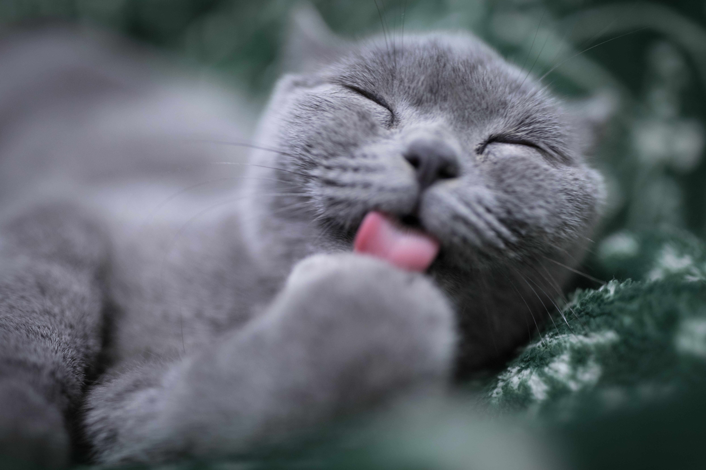

Characteristic


포유류의 일종. 식육목 고양잇과에 속하는 대표적인 동물이다. 크게는 가축화한 집고양이와 야생고양이로 나뉜다. 대개 개보다는 작은 몸집에 다른 주요 가축에 비해 육식동물의 야생성이 잘 남아있어 쥐 등의 해로운 소동물을 사냥해 인간에게 도움이 될 뿐만 아니라 귀엽거나 요염한 외모로 애완용으로 인기가 매우 많아 개와 함께 애완동물계의 양대 산맥이며, 아주 먼 과거부터 인간과 함께하고 있는 동물이다.
총명한, 내성적인 성격, 주인의식
연령 2~3개월 미만 기준 25 ~ 50 만원
(혈통 종류에 따라 더 비쌀수 있다)